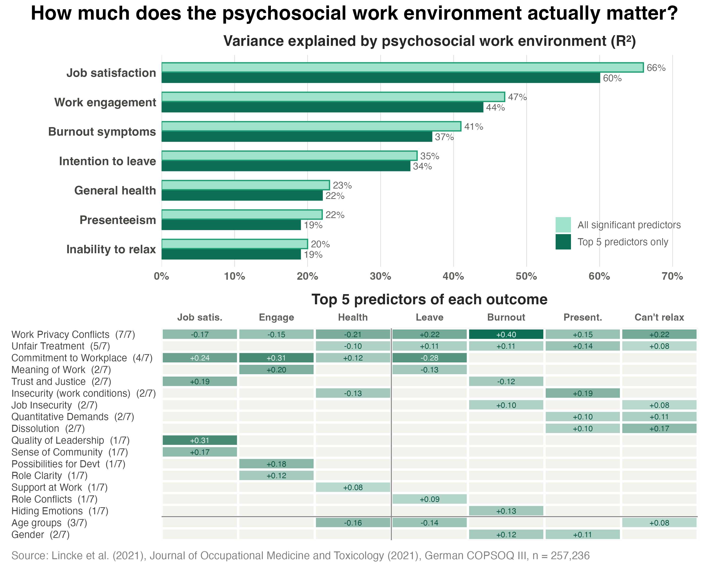

Drawing on data from more than 257,000 employees, Lincke et al. (2021) published one of the largest validation studies to date on any psychosocial risk assessment tool.
They used the Copenhagen Psychosocial Questionnaire (COPSOQ III) to examine how psychosocial work factors relate to seven key workplace outcomes: job satisfaction, work engagement, burnout, intention to leave, general health, presenteeism, and the ability to relax after work.
The figure below provides a summary of their key findings:

1) The top panel shows the total variance in each outcome explained by COPSOQ factors. The psychosocial environment explains a whopping 66% of the variance in job satisfaction. In plain terms, this means that around two-thirds of the difference between more and less satisfied employees can be accounted for by their psychosocial work environment alone.
2) This predictive power holds for other attitudinal outcomes: 47% for work engagement and 41% for burnout. Even for health-related outcomes, which are shaped by other factors beyond work, the psychosocial environment explains roughly 20% of why people differ in terms of general health, presenteeism, and the inability to relax.
3) The bottom panel shows the top 5 drivers of each outcome. Work–Privacy Conflict (the extent to which work intrudes on personal life) ranks among the top five predictors for all seven outcomes, carrying the strongest single effect anywhere in the figure (a standardised coefficient of 0.40 for burnout).
4) Unfair Treatment predicts five outcomes, and Commitment to the Workplace predicts four. Beyond these, factors are highly outcome-specific (e.g., Quality of Leadership drives only job satisfaction).
These findings reinforce that the psychosocial work environment is a primary driver of how people feel and function at work. Importantly, these are features of work design that organisations can actually change. Leaving these issues unaddressed allows early warning signs like burnout and low engagement to compound into more tangible downstream costs, driving turnover and increasing the risk of psychological injury claims.
Studies like this also strengthen the case for using the COPSOQ III. Not only is it the most well-validated psychosocial risk assessment tool internationally, these findings provide a strong evidence base connecting its factors to real harm.
Feel free to reach out if you're interested in using the COPSOQ III to assess psychosocial risk in your organisation.